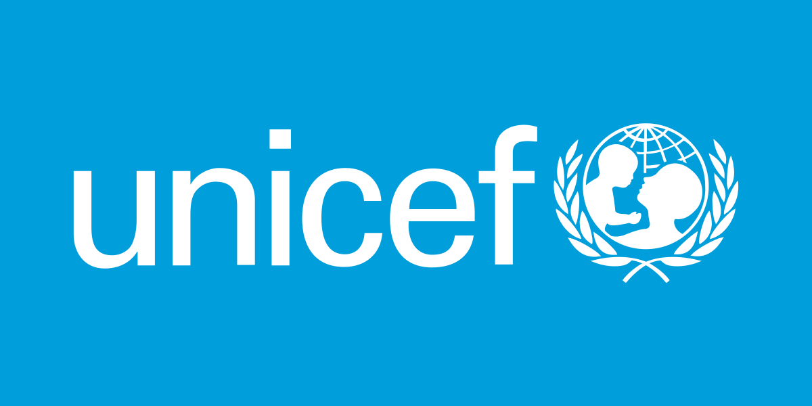
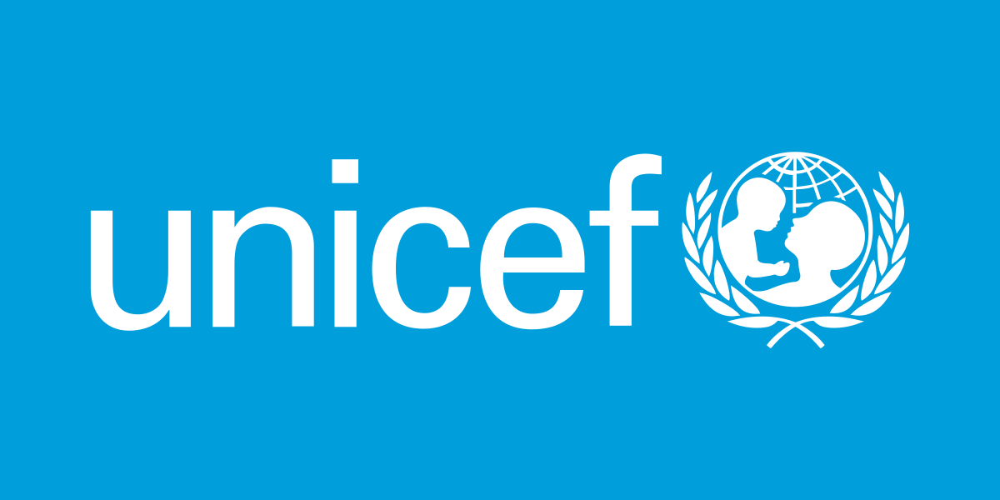

.png)
.png) Информация
Волентеры
Финансовая поддержка
Сотрудничество
Информация
Волентеры
Финансовая поддержка
Сотрудничество
По всему миру ЮНИСЕФ поддерживает развитие волонтерского движения и инициатив, которые помогают в реализации миссии организации по защите прав детей.
Волонтерское движение ЮНИСЕФ насчитывает более 10 000 000 добровольцев по всему миру;
36 стран активно участвуют в Глобальной волонтерской инициативе, в том числе и Казахстан;
Десятки тысяч волонтеров прошли обучение и получили новый опыт благодаря участию в реализации программ ЮНИСЕФ.
Волонтеры ЮНИСЕФ в Казахстане
Волонтерское движение ЮНИСЕФ в Казахстане насчитывает 10000 человек.
Школьники, студенты, молодые специалисты повышают осведомленность детей по различным вопросам, участвуют в мероприятиях, учатся и развиваются с помощью программ ЮНИСЕФ.
Волонтеры ЮНИСЕФ смогли поделиться новыми знаниями и навыками с более чем 100 000 школьников, их родителями и учителями. С 2020 года волонтерские инициативы ЮНИСЕФ охватили такие направления,
как #PlasticFreeKazakhstan, предотвращение буллинга (#BeKind), повышение осведомленности о мерах профилактики COVID-19 (#UsefulQuarantine),
клубы по правам ребенка, снижение риска стихийных бедствий (DRR), инклюзивное общество, безопасность дорожного движения, развитие экологических навыков (#BeGreen) и проект “серебряные волонтеры”.
Текущие направления:
Программа наставничества для поддержки детей в выполнении домашних заданий, особенно из сельской местности, с использованием подхода «равный равному» - Volunteering for Education.
Программа наращивания потенциала школьников и подростков в области цифровой грамотности, кибербезопасности, мира и стабильности, с использованием подхода «равный равному» - #QauipsizInternet.
Программа по вовлечению детей и юных волонтеров в обеспечение готовности к чрезвычайным ситуациям и реагирования на них, снижение риска бедствий (СРБ) и адаптации к изменению климата - #BeSafe.
Как стать волонтером ЮНИСЕФ?
Быть в возрасте 16 лет и старше.
Иметь желание внести вклад в развитие страны, в улучшение условий жизни детей и подростков в Казахстане.
Подписаться на официальный аккаунт ЮНИСЕФ Казахстан в Instagram и следить за объявлениями об открытых наборах на волонтерские программы.
Посещать регулярно официальный вебсайт ЮНИСЕФ, чтобы не пропустить информацию о новых волонтерских программах.
Быть готовым посвящать 2–3 часа вашего свободного времени в неделю на участие в волонтерской программе.
Как подать заявку?
На данный момент прием заявок закрыт, объявление о новом наборе будет опубликовано на сайте ЮНИСЕФ Казахстан и на официальном аккаунте в Instagram.
 
